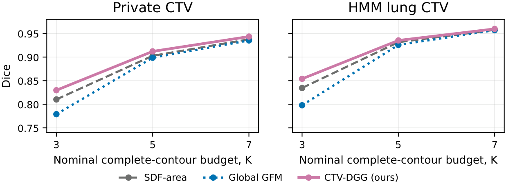
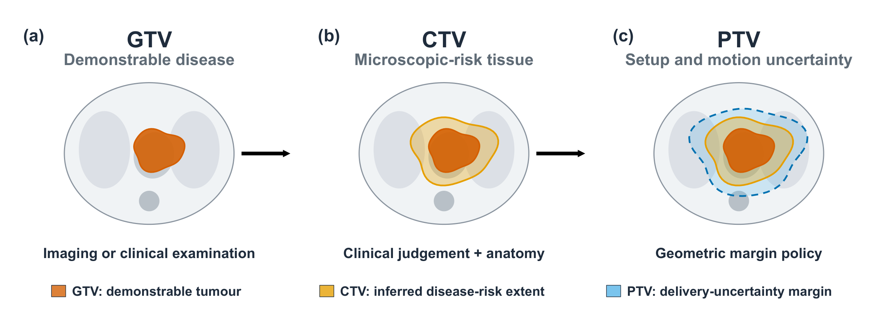

Under review
CTV-DGG: Prompt-Conditioned Three-Dimensional Clinical Target Volume Delineation with Geometric Guidance
Planning CT, anatomical context and a few complete target contours are combined to complete a three-dimensional CTV. The method learns bounded mixtures of deterministic geometric candidates and restores every supplied contour plane exactly.
在少量完整轴向轮廓的条件下，结合规划 CT 与解剖信息完成三维临床靶区。下文展示方法架构、提示预算分析与可视化结果。
From contours to a volume
Complete contours on a few axial planes specify the target. Three deterministic geometric fields provide alternative completions; a network learns local fusion weights within a constrained output space.

Original manuscript Figure 3. Network architecture of CTV-DGG. Open the figure for the full-resolution PDF.
中文简介：稀疏轮廓引导的三维临床靶区补全
CTV-DGG 输入规划 CT、危及器官掩膜及 3、5 或 7 张完整轴向轮廓。方法构建 Linear-mask、SDF-base 和 SDF-area 三种几何候选，通过有界的逐体素权重修正实现自适应融合，最后精确恢复输入轮廓平面的前景与背景。
当前结果来自两个胸部 CTV 队列的回顾性评估。提示由完整参考标注模拟生成；结果尚不能证明真实医生选片效率、临床节省时间或前瞻性有效性。
How much do sparse contours help?
Both geometric interpolation and learned fusion improve with more supplied contours. The additional Dice gain over SDF-area is largest at the three-plane budget in the reported experiments.

| Cohort | Planes | SDF-area | CTV-DGG | Δ Dice |
|---|
These are descriptive, retrospective results (31 private-cohort and 265 HMM test cases). The full-volume scores include supplied planes restored exactly from simulated prompts. They do not establish equal interaction cost, statistical superiority or prospective clinical effectiveness.
Download aggregate resultsWhy clinical intent matters
The project focuses on CTV completion: supplied contours communicate a target definition that may extend beyond what is directly visible in the planning image.

Original manuscript Figure 1. Schematic illustration, not a patient scan.
Project resources
The project repository is being prepared. A public manuscript link will be added when available.